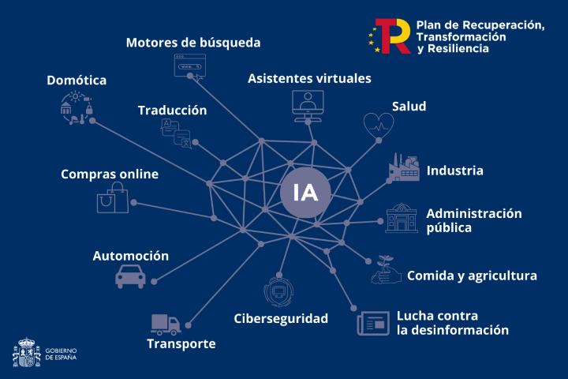

La Inteligencia Artificial (IA) es la combinación de algoritmos planteados con el propósito de crear máquinas que
presenten las mismas capacidades que el ser humano. Una tecnología que todavía nos resulta lejana y misteriosa,
pero que desde hace unos años está presente en nuestro día a día a todas horas.
Las Inteligencias artificiales utilizan algoritmos y modelos matemáticos para procesar grandes cantidades de datos y tomar decisiones basadas en patrones y reglas establecidas a través del aprendizaje automático, que es la capacidad de una máquina para aprender de forma autónoma a partir de datos sin ser programada
IA basada en reglas: Este enfoque utiliza reglas lógicas predefinidas para tomar decisiones. Es bastante limitada en su capacidad de adaptación y generalización.
IA simbólica: Utiliza símbolos y reglas lógicas para representar el conocimiento y el razonamiento. Se utiliza en sistemas expertos y procesamiento del lenguaje natural temprano.
IA de aprendizaje automático (machine learning): Este tipo de IA permite a las máquinas aprender y mejorar a partir de datos sin programación explícita. Incluye subtipos como:
Aprendizaje supervisado: Los modelos se entrenan con ejemplos etiquetados. Aprendizaje no supervisado: Los modelos buscan patrones en datos no etiquetados. Aprendizaje por refuerzo: Los modelos aprenden a través de la interacción con un entorno y recompensas. IA profunda (Deep Learning): Es una subcategoría del aprendizaje automático que utiliza redes neuronales profundas para modelar datos complejos, como imágenes, voz y texto.
IA de procesamiento del lenguaje natural (NLP): Se centra en la comprensión y generación de lenguaje humano. Incluye tareas como traducción automática, chatbots y análisis de sentimientos.
IA de visión por computadora: Se utiliza para procesar y comprender imágenes y videos, permitiendo la detección de objetos, reconocimiento facial y más.
IA de procesamiento de voz: Se aplica para el reconocimiento de voz, síntesis de voz y análisis de emociones en el habla.
IA evolutiva: Se inspira en la teoría de la evolución para desarrollar algoritmos y sistemas que se adaptan y mejoran con el tiempo.
IA híbrida: Combina diferentes enfoques y técnicas de IA para abordar problemas complejos.
IA debil (Weak AI o Narrow AI): Está diseñada para realizar tareas específicas y limitadas, como asistentes virtuales o sistemas de recomendación.
IA fuerte (Strong AI o AGI - Artificial General Intelligence): Busca la creación de máquinas que posean una inteligencia general comparable a la humana, capaces de aprender y razonar en una amplia variedad de tareas.
IA autónoma: Se refiere a sistemas capaces de tomar decisiones y actuar de forma independiente sin intervención humana, como vehículos autónomos.
IA ética: Se enfoca en desarrollar sistemas de IA que sigan principios éticos y morales en su toma de decisiones.
IA aplicada: Se utiliza en aplicaciones específicas, como la medicina (IA médica), finanzas (IA financiera), transporte (IA en vehículos autónomos) y más.
IA de juegos: Se usa en la creación de agentes virtuales para juegos y simulaciones.
IA en robótica: Se aplica para mejorar la capacidad de los robots para realizar tareas autónomamente.